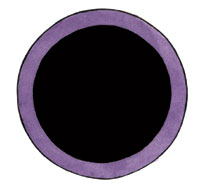

资料来源：费伦大陆信仰与神系介绍 Faiths & Pantheons
莎尔 Shar （暗夜女神）
费伦神系强大神力

别称：夜之女 Mistress of Night，失落女士 Lady of Loss，黑暗女神 Dark Goddess
圣徽： 有紫色外环的黑色圆盘

居住界域：影界 Plane of Shadow
阵营：中立邪恶 NE
神职：洞穴 craven，黑暗 dark，地下城 dungeons，遗忘 forgetfulness，失落 loss，夜晚 night，秘密 secrects，幽暗地域 the Underdark
信徒：刺客，无政府主义者，复仇者，武僧，虚无主义者，盗贼，阴影魔法网络使用者
牧师阵营：守序邪恶 LE，中立邪恶 NE，混乱邪恶 CE
神域：洞穴 Craven，黑暗 Darkness，邪恶 Evil，知识 Knowledge
喜好武器：黑夜之碟 The Disk of Night（轮刃 chakram）
AO 创造了这个世界之后，在太初时期的最后，浑沌的虚无融合成了两位美丽的女神，她们互为阴阳：一位是苏伦 Selune，是光明与创造的存在；一位是莎儿 Shar，是黑暗与毁灭的力量。极为诡异的一点在于，莎儿的本质与原初的虚无以及浑沌紧密相连，这一点从根本上便与AO创造世界的举动完全矛盾。莎儿是原初的黑暗，是在时间开始流动之前的完全虚无，是冷漠的强大神性。她极度渴望能回到太初时的宁静虚无，因此她在暗处计划着要毁灭所有的文明及秩序。她的圣徽是有紫色外环的黑色圆盘，教会的艺术作品中常常把莎儿描绘成一位拥有乌黑长发的美丽黑衣女子，她那让人难以忘怀的紫色眼睛中有着像煤炭一般漆黑的瞳孔（代表着原初的虚无）。
自从与姊姊苏伦的原初战争（一直到现在仍然持续着）时起，莎儿的神职日渐扩大，她获得了隐存的痛苦、精心策划的折磨、以及安静地为了小事展开复仇等神职。由于莎儿女神的观念严重的扭曲，她特别偏好隐藏的秘密，台面下的黑箱交易，以及各式各样的欺骗与借口。她把所有的信徒当成棋子，利用他们毁灭所有过去、现在、未来的一切。暗夜之女用虚无与疯狂的机密组建了充满腐化魔法能量的阴影魔法网络，她在其中注满了她那狡猾又诱人的强大力量。
黑暗女神深爱隐密，因此莎儿的牧师在女神的教导下，成为费伦大陆上首屈一指的秘密教会，许多人都对这个神秘的教会一无所知。虽然莎儿被视为黑暗的复仇女神，不过也有许多人在悲痛以及蒙受损失之时也会想起她，因此许多人都相信她的牧师会现身帮助那些遭受冤枉以及蒙受损失的人。不过恰恰相反，莎儿的牧师并不会解救这些遭受不平的人们，他们反而会「解放」这些人－设法扭曲这些被害者的悲痛与对「加害者」的怨恨，使这些人加入莎儿的教会而展开复仇，以设法折磨他们观念中的「背叛者」。善神的牧师（特别是蜜丝特拉 Mystra、洛山达 Lathander、以及苏伦）因而警告人们不要妄想能从莎儿的教义得到慰藉，但是悲痛、绝望、以及怨恨往往会扭曲人们的价值观，蒙蔽人们的理智，使他们仇视正义，因而莎儿的力量与教会规模仍然与时俱增。
莎儿的牧师在半夜祈祷以获得神术。由于其信徒致力于践行女神隐密的教义，因此莎儿教会只有一个圣日。在月之盛典 Festival of the Moon当天，莎儿的信徒会齐聚庆祝黑暗又将回归。当地教会的领导人向女神进行活物献祭后，会对众人宣布来年的黑暗计划。每过十天信徒都会聚在一起举行名为「光明终结」Nightfall的仪式，当信徒们在夜间跳舞以及吃过圣餐之后，他们就会进行一件邪恶行动。莎儿的牧师通常兼职盗贼，她最虔诚的仆人则会进阶成为夜暮使者 Nightcloak。至于加入龙巫教 the Cult of the Dragon的莎儿信徒则常常成为邪龙骑士 Wearer of Purple。
历史/与众神的关系 History/Relatiobship：
在漫长的历史中，莎儿与她的光明姊姊之间那永不歇息的战斗导致了许多神o的诞生与毁灭。虽然苏伦公开且直接地同她的双胞胎妹妹战斗，但是失落女士并不直接与她的双胞胎姊姊战斗，反而私下驱策她的信徒去摧毁苏伦的牧师以及苏伦所珍视的事物以削弱姊姊的力量。不过，莎儿有时也会亲自动手击杀较为弱小的对手。在动荡之年中，莎儿在绝妙的时机下杀害了掌管洞穴、地城以及幽暗地域的神o艾布兰多 Ibrandul。对于原艾布兰多的信徒，她仍然以艾布兰多之名给予神术，并借着这种欺骗来增加自己的力量。由于盗贼之神麦斯克 Mask掌控了幽影 shadow神职，莎儿一直对麦斯克抱持冰冷的怒意，并寻找着适当的时机以消灭麦斯克。莎儿深爱黑暗与虚无，因而她仇视一切与生命以及光明有关的神o。另外一点，由于试图掌控所有与复仇相关的事物，因此她也极为仇视弱小的复仇之神霍尔 Hoar。疾病与毒药女神塔洛娜 Talona一直以来都是莎儿的盟友，不过她服侍黑暗女神的目的也不过是为了藉由莎儿的帮助以毁灭她最痛恨的敌人－折磨与痛苦女神劳薇塔 Loviator。
教义 Dogma：
记住，莎儿女神只会把最深层的秘密教给她最忠实的信徒。不要相信任何关于成功的希望或是承诺。不论你在何处发现月亮的光辉（信仰苏伦的信徒以及与苏伦教会有关的物品），都要尽你所能的将其扑灭；不过如果对方太过强大，那么你要做的就是把自己藏起来，然后等待最佳的时机。当黑夜来临时，那就是你行动之刻。不要妄图为自己的利益奋斗；除非得到黑暗女神的指示与监督，否则不准擅自计划或是行动。除非是为了生意往来或是为了腐化他们的信仰，否则不得与善良众神的信徒有任何关系。除非会威胁到自己的生命，否则要听从教会高层牧师的指示。
牧师与神殿 Clergy & Temples：
莎儿的牧师会在那些蒙受巨大损失或遭到背叛之人心中埋下仇恨的种子。同时，因为莎儿掌管着黑暗与夜晚，因此对于她的信仰在失明者（尤其是那些双目毁于他人过失或恶意之下的失明者）、夜行性与穴居性类人种族、以及排斥光明的生物（比如各种地精 goblinoids）中也广为流传。那些喜爱黑暗以及在夜晚行动（比如刺客或是盗贼）也崇拜她以乞求庇佑。除此之外，许多精神病患与心智扭曲的狂人也崇拜莎儿。由于莎儿的教义与扭曲的疯狂可以说是一体的两面，因此许多苏伦的牧师都致力于找出疯狂之人加以治疗（或加以囚禁）。
每个独立的隐密教团都由一位手握大权的独裁领袖管理。不过，即使身为教团的一份子，也很少有人会知道其它成员的名字，而教团领导人的真正身分就更是有如谜一般的神秘。在莎儿教会势力庞大的地区中，对苏伦教会的宗教战争行动（通常是暗杀）可以说是屡见不鲜。由于许多信众都在这些行动中牺牲（不是当场战死就是稍后被执政当局处决），因而教会的规模一直巧妙的维持着（也更加利于隐藏）。各地莎儿的神殿外观虽都不尽相同，不过通常都会将居住区与事物区分隔两地以利隐藏。这些神殿通常都会有一个共同的特征，就是都会有一个施展了深幽黑暗术 deeper darkness的密室（用来举行宗教仪式与献祭）。
和他们的女神一样，莎儿的牧师酷爱秘密的隐藏自己。他们常在开化的文明地区建立秘密教团或是推广伪神信仰用以腐化当地的社会民心。教团的成员们努力地在暗中颠覆政府、鼓动与策划精心的复仇、吸收新进成员、以及借着散布流言与反动言论以煽动民众暴动。莎儿的信徒认为唯有跟随女神的教诲才能得到真正的自由，任何阻碍这种真正自由的都是他们所要打倒的敌人。对他们来说，万物中将消亡，他们活在世上的唯一目的就是促使终结尽早降临。在莎儿信徒中最受女神眷护的精英－黑月武僧团（武僧兼职术士），借着阴影魔法网络给予的能量以完成黑暗女神的旨意。
特殊神力－封锁阴影魔法网络 Deny Shadow Weave：
莎儿可以封锁任何生物（不管是凡物还是神性存在）透过阴影魔法网络施展法术。所有被封锁的生物都将无法透过阴影魔法网络施展法术或是使用法术型能力。此能力对透过魔法网络施展法术的生物无效。
莎儿的化身 Shar's Avatar
当莎儿降临凡间之时，她的化身有两种截然不同的形象－夜咏者 Nightsinger与暗舞者 Dark Dancer。夜咏者身高约为10眨身着一袭宽大的黑袍，脸上则戴着墨色的羽毛面具，茂密的黑羽自脸上流泻入兜帽的深处。夜咏者并不说话，当她开口时，自她口中吟咏出的，是充满了悲伤与失落的歌声。相较之下，莎儿化身的另一个形象，暗舞者，出现之时身着衣物极少。暗舞者有着美好曼妙的舞者身段，她的衣着只能稍稍掩饰住她那微微发亮黑玉一般的肌肤。这位7崭叩呐性跳着迷人的回旋舞步，用她那充满诱惑力的挑逗凝视「说服」凡人们崇拜她。
莎儿很少在费伦现身，她多半只会在那些充满了黑暗舞蹈，圣餐会，以及充满诱人情欲的盛大黑暗祭典中降临。
注：在莎儿女神的图片中右边那位就是夜咏者，左边那位就是暗舞者。